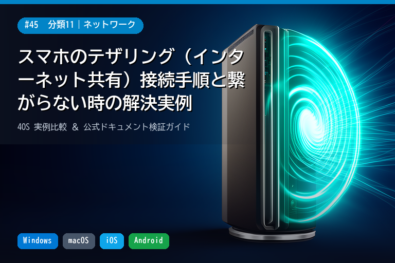

#45｜分類11: ネットワーク・サーバー・インフラ構築 2026-11-23

スマホのテザリング（インターネット共有）接続手順と繋がらない時の解決実例｜Windows・macOS・iOS・Android
「外出先で急に仕事をする必要があるけれど、Wi-Fiがない」「カフェでネットを繋ぎたいけれど公共Wi-Fiはセキュリティが不安」といった場面で、最も手軽な解決策となるのがスマホのテザリング（インターネット共有）機能です。
しかし、いざ設定しようとすると「PCからスマホが見つからない」「パスワードを入れたのに繋がらない」「USBで繋いだのに反応しない」といったトラブルに直面することも少なくありません。
この記事では、Windows、macOS、iOS、Androidの4つの主要OSにおけるテザリング接続手順を徹底比較し、初心者の方でもスムーズに設定できるよう、具体的な操作手順と「繋がらない時」の解決策を網羅して解説します。
4OS比較早見表
まずは、各OSにおけるテザリング機能の基本仕様を一覧で確認しましょう。
| OS | 主な接続方式 | 特徴・注意点 | USBテザリングの挙動 |
|---|---|---|---|
| Windows 11 | Wi-Fi / Bluetooth / USB | 標準的なネットワーク管理機能を提供。ドライバに依存する。 | Androidは標準対応、iOSはドライバー環境に左右される。 |
| macOS | Wi-Fi / Bluetooth / USB | Appleエコシステムとの親和性が高い。設定が直感的。 | iPhoneと接続時、自動認識されやすい設計。 |
| iOS (iPhone) | Wi-Fi / Bluetooth / USB | 「個人用ホットスポット」として提供。セキュリティが強固。 | Macとの接続は非常に安定している。 |
| Android | Wi-Fi / Bluetooth / USB | メーカーによりUIが異なるが、基本機能は共通。 | システムレベルで標準対応しており、汎用性が高い。 |
1. Windows 11 での実例手順
Windows 11では、スマホを「Wi-Fiルーター」として認識させます。
① 公式仕様に基づく正確な実例手順
- スマホ側の準備: iPhoneなら「設定」＞「インターネット共有」、Androidなら「設定」＞「ネットワークとインターネット」からテザリング（ホットスポット）をONにし、パスワードを設定します。
- PCでの操作: 「スタートメニュー」＞「設定」＞「ネットワークとインターネット」＞「Wi-Fi」を開きます。
- 接続: 「利用可能なネットワークを表示」をオンにし、表示されたスマホの名前を選択。パスワードを入力して接続します。
- USB接続の場合: スマホとPCをデータ転送対応のケーブルで接続し、スマホ側の設定で「USBテザリング」をONにします。Windows側では自動的に「イーサネット」として認識されます。
② 標準機能の制限事項・非対応項目
- USBテザリング名の不一致: Androidの場合、メーカー（Pixel, Galaxy等）によって接続時のデバイス名や通知文言が異なります。Windows側で一律の名称で表示されるわけではないため、接続されたデバイスを確認する必要があります。
- Bluetooth経由の不安定さ: iOSとWindows間でのBluetoothテザリングは、ドライバのバージョンにより接続が切断されやすい傾向があります。安定性を求めるならWi-FiまたはUSBを推奨します。
③ よくあるトラブルと解決法
- 「パスワードが間違っている」と表示される
- 原因: スマホ側で変更したパスワードがPC側にキャッシュされている、またはCaps Lockの状態。
- 解決: Windowsのネットワーク一覧から該当のSSIDを一度「削除（忘れる）」し、再度パスワードを正確に入力してください。
- 「このネットワークは安全ではありません」と警告が出る
- 原因: セキュリティプロトコルの不整合や公的Wi-Fiとの混同。
- 解決: 「設定」＞「Wi-Fi」＞「ネットワークのプロパティ」で「このネットワークを安全とみなす」にチェックを入れてください。
- ファイアウォールによるブロック
- 原因: セキュリティソフトがテザリング通信を遮断している。
- 解決: 「Windowsセキュリティ」＞「ファイアウォールとネットワーク保護」で、一時的に保護をオフにするか、特定のIP範囲を許可してください。
2. macOS での実例手順
macOSはiPhoneとの親和性が高く、特にUSB接続においてスムーズな体験を提供します。
① 公式仕様に基づく正確な実例手順
- スマホ側の準備: iPhone/Androidでテザリング機能をONにします。
- Wi-Fi接続: 「システム設定」＞「ネットワーク」＞「Wi-Fi」を選択。「自動で検索する」をオンにし、スマホのSSIDを選択してパスワードを入力します。
- USB接続（iPhone）: iPhoneとMacをケーブルで接続。iPhone側の「インターネット共有」画面でUSBアイコンが有効であることを確認すると、Mac側で自動的にネットワークとして認識されます。
② 標準機能の制限事項・非対応項目
- SMBプロトコルの影響: テザリング自体には影響しませんが、テザリング経由でスマホ内のファイルにアクセス（SMB接続）する場合、macOSはSMBv3を優先するため古いデバイスとの互換性に注意が必要です。
③ よくあるトラブルと解決法
- 「パスワードを忘れた」と表示され入力できない
- 原因: iOSの仕様上、現在のホットスポット用パスワードは画面上に表示されないため。
- 解決: iPhoneの「設定」＞「インターネット共有」から新しいパスワードを再設定してください。
- USBテザリングが認識されない
- 原因: ケーブルが充電専用、またはiPhone側でUSB接続が許可されていない。
- 解決: データ転送対応の純正またはMFi認証ケーブルを使用し、iPhone側の「インターネット共有」設定でUSB接続を有効にしてください。
- ネットワーク接続が不安定（警告が出る）
- 原因: セキュリティプロトコルの不整合。
- 解決: 「システム設定」＞「Wi-Fi」から一度ネットワークを削除し、再接続を試みてください。
3. iOS（iPhone / iPad）での実例手順
iPhoneを「ルーター」として動作させる際の操作です。
① 公式仕様に基づく正確な実例手順
- 設定: 「設定」アプリを開き、「インターネット共有」をタップします。
- ONにする: 「モバイルデータ通信」をオンにし、「インターネット共有」のスイッチをオンにします。
- パスワード設定: 「Wi-Fiのパスワード」を任意の文字列に変更します（初期値は自動生成されます）。
② 標準機能の制限事項・非対応項目
- USBテザリングの実装: iOSはMacとの接続において非常に安定したデータ転送を提供しますが、WindowsとのUSB接続では特定のドライバ環境がないと認識されないことがあります。
- Bluetoothのみの動作: Wi-Fiがオフの場合、Bluetoothのみで動作することがありますが、通信速度は極端に低下するため注意が必要です。
③ よくあるトラブルと解決法
- 「インターネット共有」をオンにできない（グレーアウト）
- 原因: モバイルデータ通信自体がオフ、またはキャリアによる制限。
- 解決: 「設定」＞「モバイル通信」でデータ通信がオンになっているか確認してください。また、機内モードになっていないかもチェックします。
- パスワードを忘れた（表示不可）
- 原因: iOSの仕様により現在のパスワードは隠されているため。
- 解決: 「インターネット共有」画面から新しいパスワードを上書き設定してください。
- 「このネットワークに接続できません」とエラーが出る
- 原因: Wi-Fiセキュリティプロトコルの不一致、またはペアリングの失敗。
- 解決: 一度iPhone側の「インターネット共有」をオフにし、PC側で保存されているSSID情報を削除してから再試行してください。
4. Android での実例手順
Androidは機種（Pixel, Galaxy等）によりメニュー名が異なりますが、基本構造は共通です。
① 公式仕様に基づく正確な実例手順
- 設定: 「設定」アプリを開き、「ネットワークとインターネット」＞「ホットスポットとテザリング」へ進みます。
- Wi-Fiホットスポット: 「Wi-Fiホットスポット」をオンにします。ここでSSID（名前）とパスワードを設定できます。
- USBテザリング: PCと接続した状態で、「USBテザリング」のスイッチをオンにします。
② 標準機能の制限事項・非対応項目
- メーカー固有アプリ: 一部の機種では、システム設定内ではなく専用の「接続管理アプリ」から操作が必要な場合があります。
- 省電力モードの影響: バッテリーセーバーが有効な場合、テザリング機能が自動的にオフになったり、通信速度が制限されたりすることがあります。
③ よくあるトラブルと解決法
- PC側で「未識別ネットワーク」となる
- 原因: Android側のUSB接続モードが「充電のみ」になっている。
- 解決: 接続時にスマホに表示される通知をタップし、「ファイル転送」または「USBテザリング」を選択してください。
- ホットスポットがすぐに切れる
- 原因: 「接続のないデバイスをスリープさせる」等の省電力設定。
- 解決: ホットスポット設定内の「スリープタイマー」や「接続のないデバイスの切断」をオフにしてください。
- 通信速度が極端に遅い
- 原因: 周波数帯（2.4GHz/5GHz）の干渉、またはキャリアの制限。
- 解決: 設定で「AP帯域」を5GHzに変更するか、逆に混雑を避けるために2.4GHzに固定して試行してください。
よくあるトラブルと解決チェックリスト
テザリング接続でつまずいた時は、以下の項目を順番に確認しましょう。
- [ ] 物理的な接続の確認: USBケーブルは「データ転送対応」ですか？（充電専用ケーブルではテザリングできません）
- [ ] スマホ側の設定再確認: 「インターネット共有」や「モバイルデータ通信」自体がONになっていますか？
- [ ] パスワードの再入力: PC側に古いパスワードが残っていませんか？一度ネットワークを削除して再接続してください。
- [ ] 機内モードの確認: 意図せず機内モードになっていないか、または「バッテリー節約モード」が干渉していないか確認してください。
まとめ：快適なマルチOS環境を作るポイント
テザリングは非常に便利な機能ですが、あくまで「モバイル通信」を利用する手段であるため、速度や安定性には限界があります。頻繁に大容量のデータ転送を行う場合や、安定したネットワークを求める場合は、以下の設備を検討することで劇的に快適な作業環境を構築できます。
- Wi-Fi 6/6E/7ルーター: 最新規格のルーターを導入することで、テザリングよりも高速で低遅延なワイヤレス環境を確保できます。
- 家庭用NAS: 外出先からスマホのテザリング経由でアクセスする代わりに、自宅にNAS（ネットワークHDD）を設置し、VPN等を通じて安全にデータを取り出す構成がおすすめです。
- LANケーブル & スイッチングハブ: 安定性は常に有線が最強です。デスク周りではスイッチングハブを活用した有線環境を整えることで、ストレスのない作業が可能になります。
用途に合わせて「手軽なテザリング」と「安定したインフラ構築」を使い分けることが、プロフェッショナルなマルチOS環境への第一歩です。
参考文献・公式ドキュメント（一次情報ソース）
本記事の手順・仕様は以下の各OSおよびツールの公式ドキュメントに基づいています。OSアップデートによりメニュー名称や挙動が変わる場合があるため、最新仕様の確認にもご活用ください。